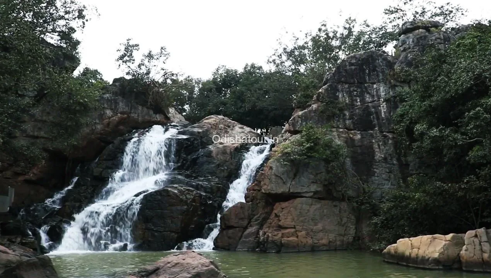
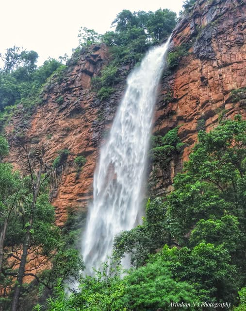
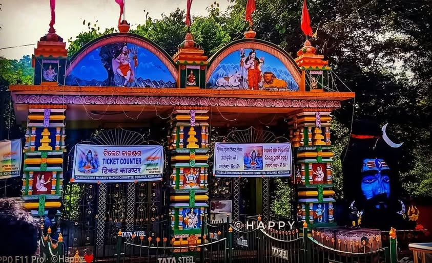
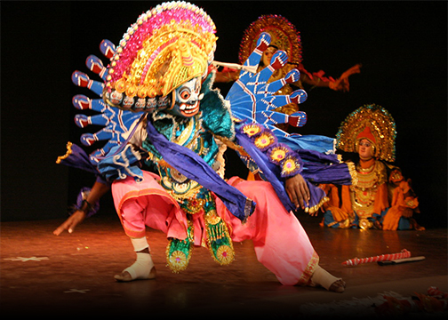
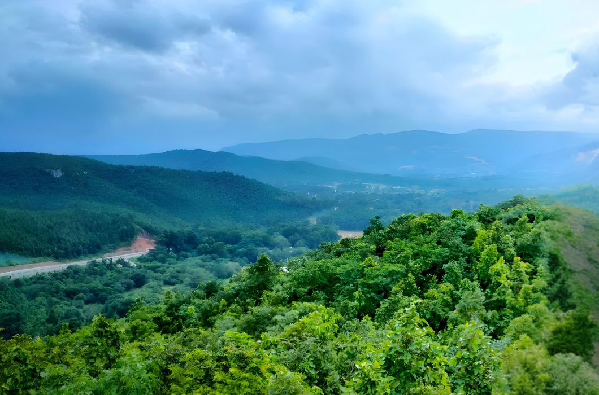

About Keonjhar
Keonjhar is one of the most beautiful districts of Odisha. The city is known for green hills, forests, waterfalls, temples, minerals, tribal culture, and peaceful natural views.

Sanaghagara Waterfall
Sanaghagara Waterfall is one of the most famous tourist places in Keonjhar. It is surrounded by hills, trees, and peaceful natural beauty.
People visit this place for picnic, photography, relaxation, and enjoying the fresh environment.

Badaghagara Waterfall
Badaghagara Waterfall is another beautiful waterfall near Keonjhar town. The place is popular for its calm environment and natural surroundings.
The flowing water, greenery, and quiet atmosphere make it a good place for nature lovers and visitors.

Khandadhar Waterfall
Khandadhar Waterfall is one of the highest waterfalls of Odisha and an important tourist attraction of Keonjhar district.
The waterfall falls from a great height and looks very beautiful, especially during the rainy season.

Murga Mahadev Temple
Murga Mahadev Temple is a famous temple of Lord Shiva located in Keonjhar district. It is surrounded by hills, trees, and natural beauty.
Devotees visit this temple during Shivaratri and other religious occasions to offer prayers.

Gonasika
Gonasika is a famous religious and natural place in Keonjhar. It is known as the origin place of the Baitarani River.
The place is surrounded by caves, forests, hills, and peaceful natural scenery.

Mining and Industry
Keonjhar is rich in minerals and is one of the important mining districts of Odisha. Iron ore mining is a major part of the district economy.
The mining and industrial activities of Keonjhar support development and provide employment to many people.

Tribal Culture
Keonjhar has a rich tribal culture with traditional dances, songs, festivals, art, and simple lifestyle.
The tribal communities of Keonjhar keep their old customs and traditions alive through festivals and daily life.

Nature and Forests
Keonjhar is covered with green forests, hills, rivers, and waterfalls. The natural environment makes the district peaceful and attractive.
The forests and hills of Keonjhar are perfect for visitors who love nature, adventure, and quiet places.